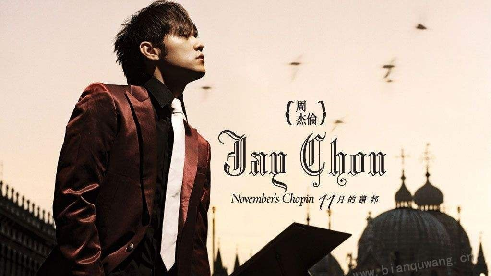
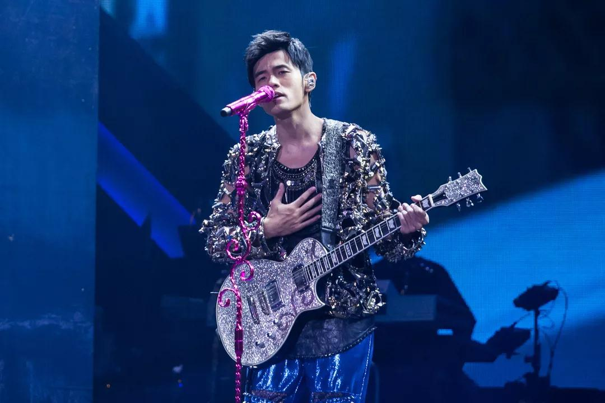

周杰伦
周杰伦，1979年1月18日出生在台北，是台湾的音乐家，作曲家和演员。主要工作是R＆B和说唱-音乐制作，他以中西音乐风格的创造性结合而闻名，因此产生了与台湾主流流行音乐不太相似的不同寻常的音乐。
重要事件
- 2000年，周决定以自己的名义发行一张专辑。
-
2005年，周杰伦在改编自日本漫画的电影《头文字D》（藤原拓海）中饰演角色。
-
2009年，索尼影业计划为电影院重拍《青蜂侠》系列，创作者设法赢得了周杰伦，因为他与卡梅隆·迪亚兹和克里斯托弗·沃尔兹一起扮演加藤。这部电影由米歇尔·冈瑞(MichelGondry)执导，于
2011 年 1 月 13 日在德国电影院上映。
- 2016年4月，周收购了台北刺客职业英雄联盟战队， 并更名为J Gaming。
专辑
- 周杰伦（2000 年 11 月 1 日）
- 幻想（2001 年 9 月 20 日）
- 八个维度（2002 年 7 月 19 日）
- 叶惠美（2003年7月31日），这张专辑是为了纪念周的母亲叶惠美
- 七里香-普通茉莉橙（2004年8月3日）
- 十一月的肖邦（2005 年 11 月 1 日）
- 仍然幻想（2006 年 9 月 5 日）
- 在逃（2007 年 11 月 2 日）
- 摩羯座（2008 年10 月 14 日）
- 时代（2010年5月18日）
- 感叹号（2011 年 11 月 11 日）
- 周杰伦的睡前故事（2016年6月24日）
| 年份 |
作品名 |
| 2005 |
头文字 D |
|
| 2006 |
金花的诅咒 |
|
| 2007 |
秘密 |
|
| 2008 |
功夫灌篮 |
|
| 2008 |
少林篮球英雄 |
|
| 2009 |
真正的传奇 |
|
| 2011 |
青蜂侠 |
|
| 2012 |
病毒因素 |
|
| 2013 |
屋顶 |
|
| 2016 |
难以理解的2 |
|
生活照


生平
周杰伦的一生